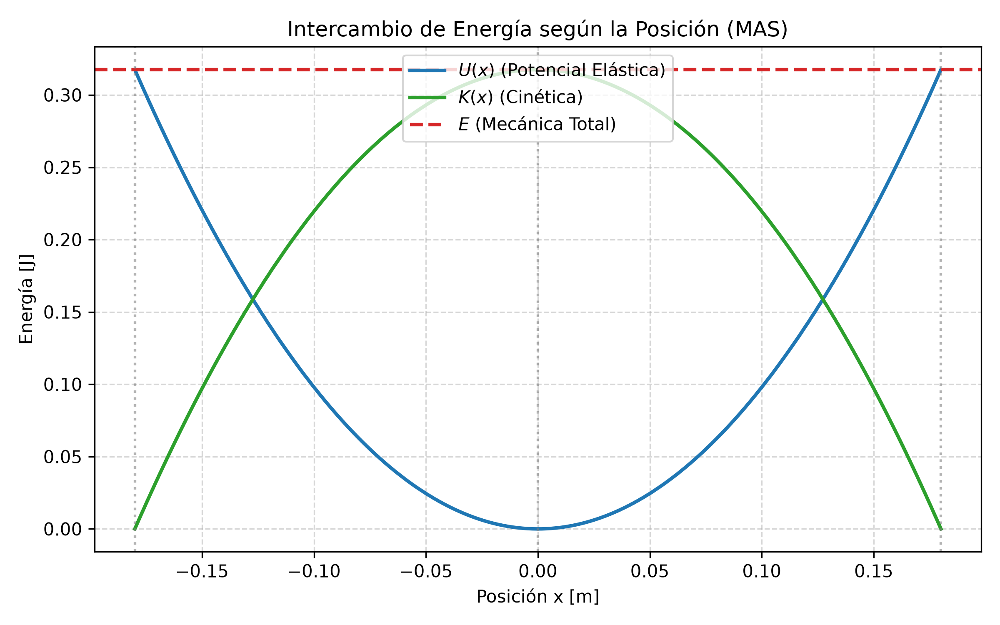
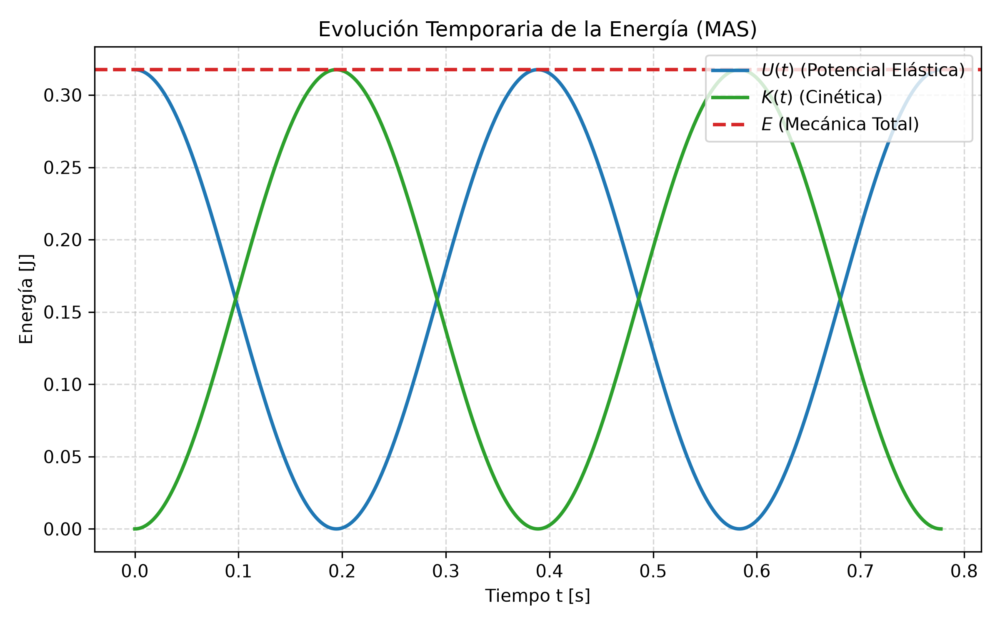

3.2 Energía en el MAS y Sistemas Oscilantes
1. La Intuición Física: ¿Qué es realmente oscilar?
Imaginate cualquier objeto que tenga un punto donde le gusta estar en reposo. Ese punto es su Posición de Equilibrio (\(x = 0\))[cite: 32, 36].
Para que exista un movimiento oscilatorio, tienen que competir dos factores: 1. Una Fuerza Restauradora o de Restitución: Una fuerza "celosa" que, apenas sacás al objeto de su posición neutra, lo tira de vuelta hacia el centro[cite: 31, 35]. Cuanto más lejos lo llevás, más fuerte lo tira[cite: 31, 35]. 2. La Inercia (Masa): Cuando el objeto vuelve impulsado por la fuerza y llega al centro (\(x = 0\)), la fuerza se hace cero[cite: 36]. Pero el objeto viene con tanto vuelo (cantidad de movimiento) que no puede frenar de golpe y se pasa de largo hacia el otro lado[cite: 36].
Al pasarse al otro lado, la fuerza restauradora vuelve a aparecer pero apuntando en sentido contrario, frenándolo y volviéndolo a traer[cite: 36]. Ese "ida y vuelta" infinito promovido por el tira y afloja entre la fuerza y la inercia es una oscilación[cite: 31, 36].
2. El MAS en la Vida Real y en la Ingeniería
El Movimiento Armónico Simple (MAS) es el modelo "ideal": sin rozamiento, sin aire y con un resorte/elemento que nunca se deforma permanentemente (cumple la Ley de Hooke)[cite: 17, 36, 54].
Aunque en el mundo real siempre hay fricción (movimiento amortiguado), el MAS es el modelo base para analizar[cite: 54, 94]:
- En Ingeniería en Minas y Geología: El funcionamiento de las zarandas o tamices vibratorios que separan material por tamaño de grano, o el comportamiento de un péndulo de torsión para calibrar instrumentos[cite: 83].
- En Estructuras y Arquitectura: La frecuencia natural con la que flamea o bambolea un edificio o puente cuando lo perturba el viento o un sismo[cite: 97]. Si la fuerza externa coincide con su frecuencia natural, ocurre el fenómeno de Resonancia (como el colapso del puente Tacoma Narrows)[cite: 97].
- En Mecánica General: Los pistones de un motor, la suspensión de un vehículo al absorber un impacto o la vibración de una cuerda de instrumento[cite: 31].
3. ¿Cómo identificar un ejercicio de MAS en un Parcial?
No adivines. Buscá estas pistas concretas en el enunciado:
| Pista en el Enunciado | Significado Físico Oculto |
|---|---|
| "Se suelta desde el reposo a X cm del centro" | Te están dando la Amplitud (\(A\)). En el reposo la velocidad es cero[cite: 36]. |
| "Superficie horizontal sin fricción / lisa" | Conservación de la Energía Mecánica (\(E = \text{cte}\))[cite: 36, 54]. |
| "Realiza N oscilaciones en T segundos" | Te dan datos para sacar el Período (\(T = \text{tiempo}/N\)) y la Frecuencia (\(f = 1/T\))[cite: 33]. |
| "Péndulo con separación angular pequeña (\(\theta < 15^\circ\))" | Habilita la aproximación \(\sin\theta \approx \theta\), transformando el péndulo en un MAS perfecto[cite: 74, 75]. |
4. El "Detector de Trampas" para el Examen
| La Trampa del Profesor | El Error Típico | La Verdad Física |
|---|---|---|
| Recorrido total: "La masa recorre \(40\text{ cm}\) de extremo a extremo". | Tomar \(A = 40\text{ cm}\). | De extremo a extremo hay dos amplitudes (\(2A\)). La amplitud es \(A = 20\text{ cm}\)[cite: 32, 33]. |
| Modo Calculadora: Resolver \(x(t) = A \cos(\omega t + \phi)\). | Usar la calculadora en DEG (Grados). | Las fases y frecuencias angulares \((\omega t + \phi)\) van en RADIANES (RAD)[cite: 37, 38]. |
| Constante de Fase (\(\phi\)): Asumir que \(\phi = 0\) por defecto. | Olvidar verificar dónde arrancó el movimiento. | Si el cronómetro arranca (\(t=0\)) con el objeto en el centro o con velocidad, \(\phi \neq 0\)[cite: 37, 41]. |
| Confusión de Frecuencias: Confundir \(f\) con \(\omega\). | Poner el valor de Hertz (\(\text{Hz}\)) directo en \(\omega\). | \(f\) está en \(\text{Hz}\) (\(1/\text{s}\))[cite: 33]. \(\omega\) es la frecuencia angular en \(\text{rad/s}\) (\(\omega = 2\pi f\))[cite: 37, 39]. |
5. El Tanque de Energía: ¿Cómo se intercambia en el MAS?
Pensá en la energía como un tanque cerrado con dos compartimentos: Energía Potencial Elástica (\(U\)) y Energía Cinética (\(K\))[cite: 54, 56, 57]. La suma de ambas siempre llena el mismo tanque total (\(E\))[cite: 57].
| Extremo (\(x = +A\))[cite: 59] | Centro de Equilibrio (\(x = 0\))[cite: 59] | Extremo (\(x = -A\))[cite: 59] |
|---|---|---|
| • Masa parada (\(v = 0\))[cite: 59] | • Resorte sin estirar (\(U = 0\))[cite: 59] | • Masa parada (\(v = 0\))[cite: 59] |
| • \(U\) es MÁXIMA[cite: 56, 59] | • Rapidez MÁXIMA (\(v = v_{\text{máx}}\))[cite: 59] | • \(U\) es MÁXIMA[cite: 56, 59] |
| • \(K = 0\)[cite: 56, 59] | • \(K\) es MÁXIMA[cite: 56, 59] | • \(K = 0\)[cite: 56, 59] |
- En los extremos (\(x = \pm A\)): El objeto se frena un instante para pegar la vuelta (\(v = 0 \implies K = 0\))[cite: 36, 59]. Toda la energía está almacenada en el resorte apretado o estirado: \(E = U_{\text{máx}} = \frac{1}{2} k A^2\)[cite: 54, 57, 59].
- En el centro (\(x = 0\)): El resorte no está comprimido ni estirado (\(U = 0\))[cite: 35, 59]. La masa pasa a fondo: \(E = K_{\text{máx}} = \frac{1}{2} m v_{\text{máx}}^2\)[cite: 56, 57, 59].
- En puntos intermedios (\(x\) cualquiera): La energía se reparte: \(E = \frac{1}{2} m v^2 + \frac{1}{2} k x^2\)[cite: 58].

6. Deducción y Expresiones Matemáticas
A. Energía Potencial (\(U\))
A partir del trabajo de la fuerza conservativa del resorte (\(F = -kx\))[cite: 54]:
Sustituyendo la ecuación de posición \(x(t) = A \cos(\omega t + \phi)\)[cite: 37, 54]:
B. Energía Cinética (\(K\))
A partir de la definición \(K = \frac{1}{2} m v^2\) y reemplazando la velocidad \(v(t) = -A \omega \sin(\omega t + \phi)\)[cite: 40, 55]:
Como \(\omega^2 = \frac{k}{m} \implies m\omega^2 = k\)[cite: 39, 55]:
C. Energía Mecánica Total (\(E\))
Sumando ambas y usando la identidad \(\sin^2\theta + \cos^2\theta = 1\)[cite: 56]:

D. Ecuación Útil de Rapidez según Posición \(v(x)\)
Igualando la energía en un punto cualquiera con la energía total (\(K + U = E\))[cite: 58]:
7. Ejercicio Modelo de Parcial (Analizado con Criterio)
Consigna: Un resorte con constante de fuerza \(k = 19.6 \text{ N/m}\) montado horizontalmente sin rozamiento se estira \(18.0 \text{ cm}\) desde su punto neutro y se suelta a partir del reposo con una masa de \(0.3 \text{ kg}\)[cite: 60].
- Determinar la energía total del sistema[cite: 60].
- Escribir la expresión de \(K(t)\) y \(U(t)\)[cite: 60].
- Calcular la velocidad cuando la masa se encuentra a \(x = 0.09 \text{ m}\)[cite: 60].
Análisis Técnico Previo:
- Sin rozamiento: Se conserva la energía mecánica (\(E = \text{constante}\))[cite: 54].
- Se suelta del reposo a \(18 \text{ cm}\): Como \(v_0 = 0\), ese punto inicial es la amplitud máxima: \(A = 0.18 \text{ m}\)[cite: 36, 60].
- Posición inicial en el extremo: El ángulo de fase es \(\phi = 0\)[cite: 40].
Resolución:
1. Energía Total (\(E\)):[cite: 61] $\(E = \frac{1}{2} k A^2 = \frac{1}{2} (19.6 \text{ N/m}) (0.18 \text{ m})^2 = 0.3175 \text{ J} \approx 0.32 \text{ J}\)$
2. Expresiones temporales \(K(t)\) y \(U(t)\): Primero calculamos la velocidad angular \(\omega\)[cite: 39]: $\(\omega = \sqrt{\frac{k}{m}} = \sqrt{\frac{19.6 \text{ N/m}}{0.3 \text{ kg}}} \approx 8.08 \text{ rad/s}\)$
Sustituyendo \(E = 0.32 \text{ J}\) y \(\omega = 8.08 \text{ rad/s}\)[cite: 61]: * Energía Potencial: \(U(t) = 0.32 \cos^2(8.08 t) \text{ [J]}\)[cite: 61] * Energía Cinética: \(K(t) = 0.32 \sin^2(8.08 t) \text{ [J]}\)[cite: 61]
3. Rapidez en \(x = 0.09 \text{ m}\) (mitad de la amplitud):[cite: 60, 61] $\(v = \omega \sqrt{A^2 - x^2} = 8.08 \sqrt{(0.18)^2 - (0.09)^2} = 8.08 \sqrt{0.0324 - 0.0081} \approx 1.26 \text{ m/s}\)$